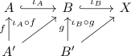

associativity of subspace topology
Proposition
Let $(X, \mathcal{T})$ be a topological space and $A \subseteq B \subseteq X$ subsets. Let $(A, \mathcal{T}_{AB})$ be the subspace $A$ of the subspace topology of $B$ and $(A, \mathcal{T}_{AX}$ the subspace of $A$ of $X$ Then
\begin{align*}
\mathcal{T}_{AB} \cong \mathcal{T}_{AX}
\end{align*}
Proof
Nach Charakterisierung der Unterraumtopologie als Initialtopologie für die Inklusionsabbildung sei:

So ist eine Abbildung $f: A' \rightarrow A$ stetig g.d.w. $\iota_A \circ f: A' \rightarrow B$ stetig ist und $\iota_A \circ f$ ist stetig, g.d.w. $\iota_B \circ \iota_A \circ f$ stetig ist. Da $\iota_B \circ \iota_A = \iota_{A,X}$ gilt, ist somit auch $\mathcal{T}_{AB} \cong \mathcal{T}_{AX}$, da die Initialtopologie eindeutig bis auf isomorphie ist.